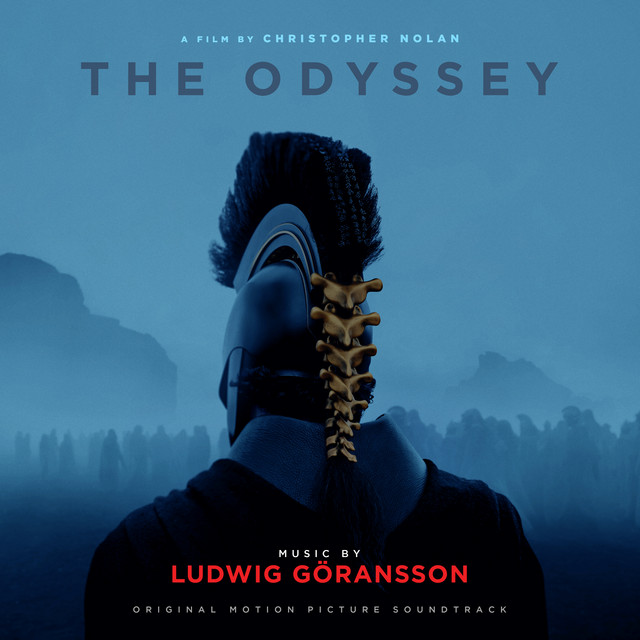

Одіссея
Про фільм
Космічний епос Крістофера Нолана
«Одіссея» (2026) — науково-фантастичний епос Крістофера Нолана, який переносить міф Гомера в космос. Капітан Одіссей (Метт Деймон) долає аномалії Всесвіту, щоб повернутися на Землю після міжзоряної війни.
Зоряний каст та визнання критиків
Фільм із
зірковим складом (Енн Гетевей, Том Голланд, Зендея) став головним хітом літа 2026 року. Критики та глядачі в захваті від масштабних візуальних ефектів, ігор з часом та потужного саундтреку.
- Метт Деймон — Одіссей (цар Ітаки)
- Том Голланд — Телемах (син Одіссея)
- Енн Гетевей — Пенелопа (дружина Одіссея)
- Захоплючий сюжет
- Вражаючі візуальні ефекти
- Глибокі філософські теми

Постер фільму 'Одіссея' (2026)